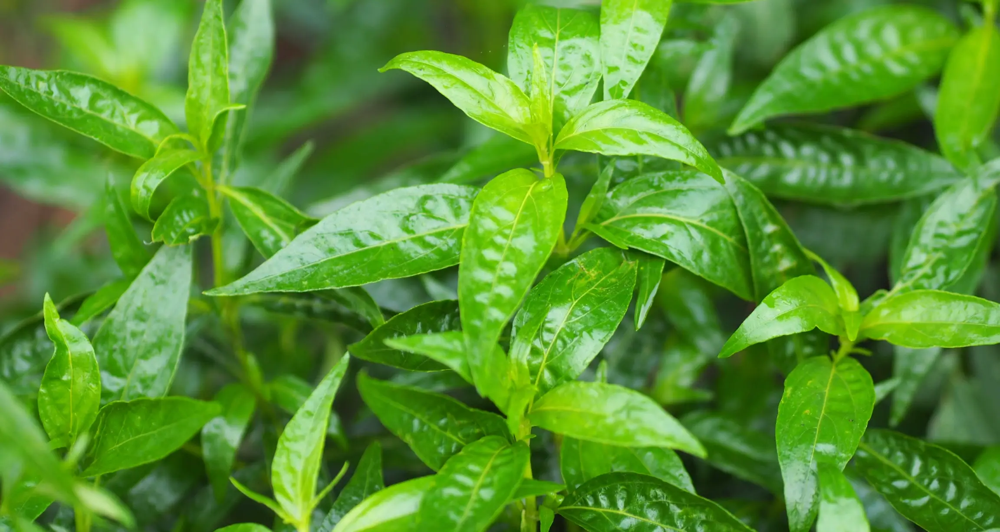

ประเภทไม้ล้มลุก

ฟ้าทะลายโจร
ไม้ล้มลุก สูง 30-70 ซม. ทุกส่วนมีรสขม กิ่งเป็นใบสี่เหลี่ยม ใบ เดี่ยว แผ่นใบสีเขียวเข้มเป็นมัน ดอก ช่อ ออกที่ปลายกิ่งและซอกใบ ดอกย่อย กลีบดอกสีขาว โคนกลีบติดกัน ปลายแยก 2 ปาก ปากบนมี 3 กลีบ มีเส้นสีม่วงแดงพาดอยู่ ปากล่างมี 2 กลีบ ผล เป็นฝัก เมื่อแก่เป็นสีน้ำตาล แตกได้ ภายในมีเมล็ดจำนวนมาก
สรรพคุณ :
- แก้ไข้ทั่ว ๆ ไป เช่น ไข้หวัด ไข้หวัดใหญ่
- ระงับอาการอักเสบ พวกไอ เจ็บคอ คออักเสบ ต่อมทอนซิล หลอดลมอักเสบ ขับเสมหะ
รักษาโรคผิวหนังฝี
- แก้ติดเชื้อ พวกทำให้ปวดท้อง ท้องเสีย บิด และแก้กระเพาะลำไส้อักเสบ
- เป็นยาขมเจริญอาหารและการที่ฟ้าทะลายโจรมีสรรพคุณ 4 ประการนี้ จึงชวนให้เห็นว่า
ตัวยาต้นนี้ เป็นยาที่สามารถนำไปใช้กว้างขวางมาก จากเหตุผลที่ฟ้าทะลายโจรมีฤทธิ์
ระงับการติดเชื้อหรือระงับการเจริญเติบโตของเชื้อโรคได้
ขิง
ขิงเป็นสมุนไพรชนิดหนึ่ง เป็นพืชล้มลุก อยู่ในกลุ่มเดียวกันกับ ข่า ขมิ้น มีลักษณะเป็นเหง้าหรือลำต้นใต้ดินที่มีกลิ่น รสชาติเผ็ดร้อน มีคุณสมบัติเป็นยาได้ และสามารถใช้ประโยชน์ได้หลายอย่าง ทั้งนำมาประกอบอาหาร หรือนำมาทำเป็นยาสมุนไพรได้เช่นกัน
สรรพคุณ :
- เหง้า : รสหวานเผ็ดร้อน ขับลม แก้ท้องอืด จุกเสียด แน่นเฟ้อ คลื่นไส้อาเจียน แก้หอบไอ ขับเสมหะ แก้บิด เจริญอากาศธาตุ สารสำคัญในน้ำมันหอมระเหย จะออกฤทธิ์กระตุ้นการบีบตัวของกระเพาะอาหารและลำไส้ ใช้เหง้าแก่ทุบหรือบดเป็นผง ชงน้ำดื่ม แก้อาการคลื่นไส้อาเจียน แก้จุกเสียด แน่นเฟ้อ เหง้าสด ตำคั้นเอาน้ำผสมกับน้ำมะนาว เติมเกลือเล็กน้อย จิบแก้ไอ ขับเสมหะ
- ต้น : รสเผ็ดร้อน ขับลมให้ผายเรอ แก้จุกเสียด แก้ท้องร่วง
- ใบ : รสเผ็ดร้อน บำรุงกำเดา แก้ฟกช้ำ แก้นิ่ว แก้ขัดปัสสาวะ แก้โรคตา ฆ่าพยาธิ
- ดอก : รสเผ็ดร้อน แก้โรคประสาทซึ่งทำให้ใจขุ่นมัว ช่วยย่อยอาหาร แก้ขัดปัสสาวะ
- ราก : รสหวานเผ็ดร้อนขม แก้แน่น เจริญอาหาร แก้ลม แก้เสมหะ แก้บิด
- ผล : รสหวานเผ็ด บำรุงน้ำนม แก้ไข้ แก้คอแห้ง เจ็บคอ แก้ตาฟาง เป็นยาอายุวัฒนะ
- แก่น : ฝนทำยาแก้คัน